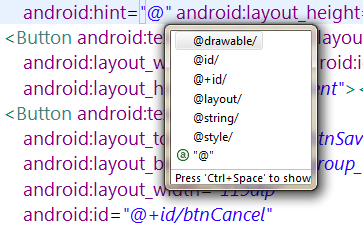

Difference between "@id/" and "@+id/" in Android
What is the diffirence between the
@id/and@+id/?
In @+id/ the plus symbol + instructs to create a new resource name and
add in to the R.java file but what about @id/? From the documentation
of ID: when referencing an Android resource ID, you do not need the plus
symbol, but must add the android package namespace, like so:
android:id="@android:id/list"
But in the image below Eclipse doesn't suggest any kind of @android:id/.

Are
@id/and@android:id/the same?
Answer
you refer to Android resources , which are already defined in Android
system, with @android:id/.. while to access resources that you have
defined/created in your project, you use @id/..
More Info
As per your clarifications in the chat, you said you have a problem like this :
If we use
android:id="@id/layout_item_id"it doesn't work. Instead@+id/works so what's the difference here? And that was my original question.
Well, it depends on the context, when you're using the XML attribute of
android:id, then you're specifying a new id, and are instructing the parser
(or call it the builder) to create a new entry in R.java, thus you have to
include a + sign.
While in the other case, like android:layout_below="@id/myTextView" , you're
referring to an id that has already been created, so parser links this to the
already created id in R.java.
More Info Again
As you said in your chat, note that android:layout_below="@id/myTextView"
won't recognize an element with id myTextViewif it is written after the
element you're using it in.
Suggest
the + sign is a short cut to add the id to your list of resource ids. Otherwise you need to have them in a xml file like this
<?xml version="1.0" encoding="utf-8"?> <resources> <item name="my_logo" type="id"/> </resources>